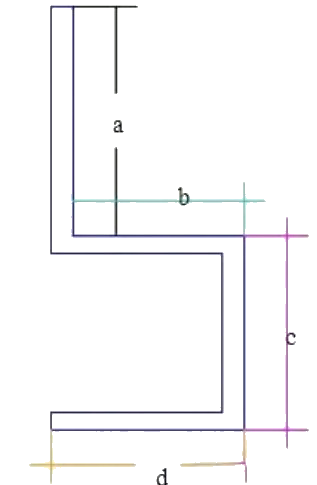
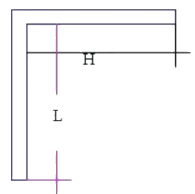

现在位置：
首页
>
铜排计算方法
（1）平弯（直角弯）外算法

上图其料长
总长= a+（料厚）+b+（料厚）+c+d -系数*直角弯的个数
注：加料长时全按外加
系数基本如下：
厚度 （mm）
系数 （mm）
模具R （mm）
3
5
5
4
7
5
5
9
5
6
10
10
8
15
10
10
18
10
（2）平弯（直角弯）内算法

系数基本如下：
厚度 （mm）
系数 （mm）
模具R （mm）
3
0.3
5
4
0.5
5
5
1
5
6
0.5
10
8
1.3
10
10
1.5
10
举例
料厚为3mm时 总长= L+0.3+H+0.3
料厚为10mm时 总长= L+1.5+H+1.5
注：每个角加两次